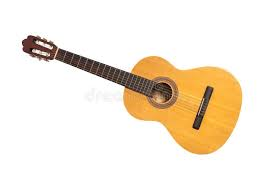

Mapa odsyłaczy to funkcja w HTML, która pozwala na kliknięcie różnych obszarów jednego obrazka i przeniesienie się w inne miejsce.
Wykorzystuje się do tego <map> oraz <area>, które łączą się z
obrazem przez atrybut usemap.
Obrazek jest „podpięty” pod mapę, a w środku mapy definiuje się klikane strefy.
Bez mapy cały obraz jest jednym dużym linkiem.
<map> to kontener na obszary klikalne. Łączy się z obrazkiem przez nazwę.
name<area><area> definiuje klikalny fragment obrazka.
| Atrybut | Opis |
|---|---|
| shape | kształt obszaru (rect, circle, poly) |
| coords | współrzędne punktów |
| href | adres linku |
| alt | opis alternatywny |
| target | sposób otwarcia linku |
<img src="mapa.jpg" usemap="#mapa1">
<map name="mapa1">
<area shape="rect" coords="10,10,100,100" href="strona1.html" alt="Strefa 1">
<area shape="circle" coords="150,80,40" href="strona2.html" alt="Strefa 2">
</map>Zobacz jak działa mapa odsyłaczy
<img src="../img/gitara.jpg" usemap="#image-map">
<map name="image-map">
<area target="_blank" alt="Pudło rezonansowe" title="Pudło rezonansowe"
href="https://pl.wikipedia.org/wiki/Pud%C5%82o_rezonansowe"
coords="147,55,166,57,175,66,185,68,206,65,216,67,230,74,240,85,242,104,232,129,219,
150,202,155,189,152,179,147,168,132,161,124,152,124,136,118,128,111,122,92,135,64"
shape="poly">
<area target="_blank" alt="Gryf" title="Gryf"
href="https://www.google.com/search?q=gitara+gryf"
coords="131,72,59,47,43,38,30,35,20,40,22,46,23,51,50,61,56,60,124,85" shape="poly">
</map>
